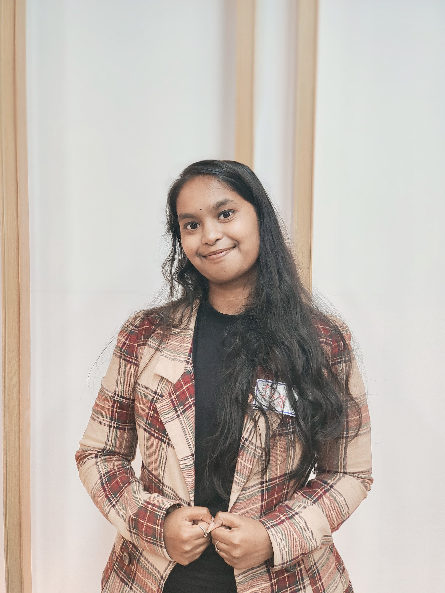

Medical computer vision
Dental and surgical imaging, segmentation, detection, DICOM workflows, and clinical validation.
↗AI / MACHINE LEARNING ENGINEER · TAIPEI, TAIWAN
I’m Chaithra Lokasara Mahadevaswamy — an AI/ML engineer working across medical AI, production MLOps, and end-to-end machine learning. I turn research and engineering into useful products, with a focus on dentistry and healthcare.

I have 1+ year of industry experience and 3+ years of academic research spanning NLP, generative AI, and healthcare R&D. My background includes computer vision, medical imaging, multimodal and multilingual AI, retrieval augmented generation, and agentic workflows.
At Smart Surgery Tek, I own AI development for iDental, from model work through deployment and monitoring, while coordinating software delivery. I’m motivated by dependable systems, measurable product improvements, and collaboration with engineering, product, data, and clinical teams.
Technical depth with an eye on the full product lifecycle.
Dental and surgical imaging, segmentation, detection, DICOM workflows, and clinical validation.
↗Data and inference pipelines, model lifecycle management, monitoring, cloud deployment, and latency optimization.
↗Multimodal retrieval, LLM applications, multilingual voice interfaces, agent tooling, and evaluation.
↗Product ownership, cross-functional delivery, research leadership, technical mentoring, and coordination.
↗Smart Surgery Tek · iDental · Taipei
Owns the iDental AI pipeline from model development to production. Reports reducing average inference latency from 11 to 3 seconds, coordinates software delivery, and supports medical imaging AI for dental workflows.
Unicorn Tutor AI · Taipei
Evaluated LLM and speech systems, including Whisper, Azure Speech, and OpenAI APIs; built prompt and speech evaluation pipelines.
Chang Gung University · Taiwan
Led the lab’s Hugging Face team and contributed to NLP, RAG, and robotics research, including conference and journal work.
National Taiwan Normal University · Taipei
Worked with the ROBOTIS-OP3 humanoid robot, ROS, computer vision, sensor fusion, and robot perception. Team lead for a third-place IROS IEEE HAC result.
Selected work across clinical AI, multimodal systems, and human-guided machine learning.
AI product ownership across dental imaging workflows: model development, active learning, deployment, and monitoring. The résumé reports a 73% reduction in average response latency, from 11 seconds to 3.
Three-stage OCR, pattern matching, and NER pre-validation to detect identifiers in clinical images, with a CVAT human review workflow and Taiwan-specific ID rules.
Video and text ingestion with transcription, scene segmentation, metadata extraction, multimodal embeddings, and Qdrant retrieval for surgical summaries and clinical search.
A continuous learning workflow linking model confidence, prediction errors, drift, and clinical feedback to CVAT review, dataset updates, retraining, and model registry management.
Periapical X-ray periodontal measurement with Vision Transformers, plus panoramic DICOM workflows for dental pathology detection, classification, and segmentation.
Real-time voice agents with tool calling, grounding, and multilingual retrieval—English speech input, Chinese document retrieval, and English voice output.
PyTorch, TensorFlow, scikit-learn, Hugging Face, OpenCV, MONAI, YOLO, segmentation, detection, DICOM, Grad-CAM
LLMs, RAG, LoRA / QLoRA, LangChain, Qdrant, Pinecone, agents, MCP, ASR / TTS, Whisper, multilingual systems
AWS SageMaker, S3, GCP, Vertex AI, BigQuery, Docker, Kubernetes, Terraform, MLflow, ZenML, CI/CD, monitoring
Python, C++, Java, FastAPI, REST APIs, SQL, GitHub Actions, testing, Jira, Agile, Scrum, product delivery, team mentoring
EDUCATION
Chang Gung University · Taoyuan, Taiwan
Specialized in NLP and generative AI; research team lead at WIDE Lab with conference and journal contributions.
Presidency University · Bangalore, India
Graduated Rank 1 in Computer Science and Engineering.
ACHIEVEMENTS & RECOGNITION
9th International Conference on Natural Language Processing and Information Retrieval, Kyushu University, Fukuoka, Japan. Associated with Chang Gung University. Research explored balancing RAG response quality against computational cost and token usage with reinforcement learning.
View certificate ↗Academic excellence in AI studies, recognized by Taiwan’s Ministry of Education, Ministry of Foreign Affairs, and Taiwan Scholarship Team.
View certificate ↗Academic performance recognition from Chang Gung University’s Graduate Institute of AI.
View certificate ↗Outstanding B.Tech CSE academic performance; recognized as the department’s top-performing student at the university’s VI Convocation.
View certificate ↗Scholarship certificate awarded by Taiwan’s Ministry of Education for master’s study at Chang Gung University.
View certificate ↗Robot Magic and Music category at the FIRA RoboWorld Cup and Summit. Contributed to the humanoid robotics team’s international competition entry.
View award ↗Optimized inference from 11 seconds to 3 seconds; the résumé also reports 95%+ key evaluation metrics for panoramic dental AI and over 90% periapical X-ray accuracy.
Led the lab’s Hugging Face team and contributed to published NLP, RAG, and robotics research.
English · C2 / Mandarin · A2 / Hindi · Native / Kannada · Native
WIDE Lab research team lead · Junior engineer and intern mentoring · Student representative and ambassador · International student mentor
CERTIFICATION
Share your name, email, and a short message. I’ll review your inquiry and decide how to follow up. My direct email and phone number aren’t displayed here.